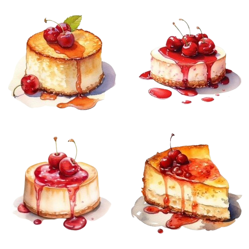

This beautiful Strawberry Cheesecake recipe is light and creamy, with a sweet strawberry sauce drizzled on top. This is the perfect make-ahead dessert.
About
Prep Time: 30 minutes
Cook Time: 1 hour and 30 minutes
Chilling Time: 8 hours
Total Time: 10 hours
Ingredients

Crust
Cheesecake
Strawberry Topping
Instructions
How to Make the Cheesecake
- Prep: Preheat the oven to 350˚F with a rack in the center of your oven. Line the bottom of a 9-inch springform pan with parchment for an easier release.
- In a medium bowl, combine graham crackers with sugar then stir in melted butter. Mix until moistened. Press crumbs into your prepared pan, going 3/4 of the way up the sides. Bake in the center of the oven at 350˚F for 8 minutes then cool to room temperature.
- Increase the oven to 450˚F. Place 2 sheets of extra-wide heavy-duty foil on the counter. Set the springform pan in the center and fold the foil up the sides of the pan ensuring there are no rips. Fan the foil out slightly at the tops to keep the rim clear for rising.
- In the bowl of a stand mixer fitted with a paddle attachment, beat cream cheese and 1 cup sugar on medium/high speed for 5 minutes until completely smooth, scraping down the bowl as needed.
- Reduce speed to medium and add eggs one at a time, letting them incorporate between each addition and scraping down the bowl as needed.
- Reduce speed to low and add sour cream and vanilla and mix just until incorporated. Pour batter over the cooled crust.
How to Bake Cheesecake in a Water Bath
- Boil a pot of water (boil more than you think you'll need). Set your foil-wrapped cheesecake pan in a deep roasting pan. Pour hot water around the edges about halfway up the sides of the springform pan.
- Carefully transfer the cheesecake to the center rack of the oven and bake at 450˚F for 15 minutes then reduce heat to 225˚F and, without opening the door, bake an additional 65-75 minutes or until the center of the cheesecake wobbles slightly when you jolt the pan.
- Remove the cheesecake from the oven and let it rest in the roasting pan with water for 45 minutes then transfer the pan to a wire rack to cool completely. Cover and chill in the refrigerator overnight to fully set before slicing.
How to Make Strawberry Topping
- In a medium saucepan, combine chopped strawberries, lemon juice, and sugar. Set over medium heat and bring to a boil. Reduce the heat and continue simmering, stirring occasionally for 20-23 minutes, or until the sauce is thickened. Cool to room temperature then refrigerate until serving.
- When ready to serve the cheesecake, garnish the top with fresh halved or quartered strawberries. Serve slices of cheesecake generously drizzled with the strawberry sauce topping.
Tips
Here are some tips for making the perfect strawberry cheesecake:
- Use room temperature ingredients for the cheesecake batter, especially the cream cheese and eggs. This ensures a smooth and creamy texture.
- For the crust, make sure to press the graham cracker crumbs firmly into the bottom of the pan to create a sturdy base for the cheesecake.
- When baking the cheesecake, consider using a water bath to prevent cracking and ensure even baking.
- Allow the cheesecake to cool completely at room temperature before chilling it in the refrigerator. This helps prevent condensation from forming on the surface.
- For the strawberry topping, adjust the amount of sugar according to the sweetness of the strawberries and your personal preference.
- When slicing the cheesecake, use a sharp knife dipped in hot water and wiped clean between each slice for clean cuts.
- Garnish the cheesecake with fresh strawberries just before serving for a vibrant and decorative touch.
- For best results, chill the cheesecake in the refrigerator for at least 8 hours or overnight before serving to allow it to set completely.
- Enjoy!